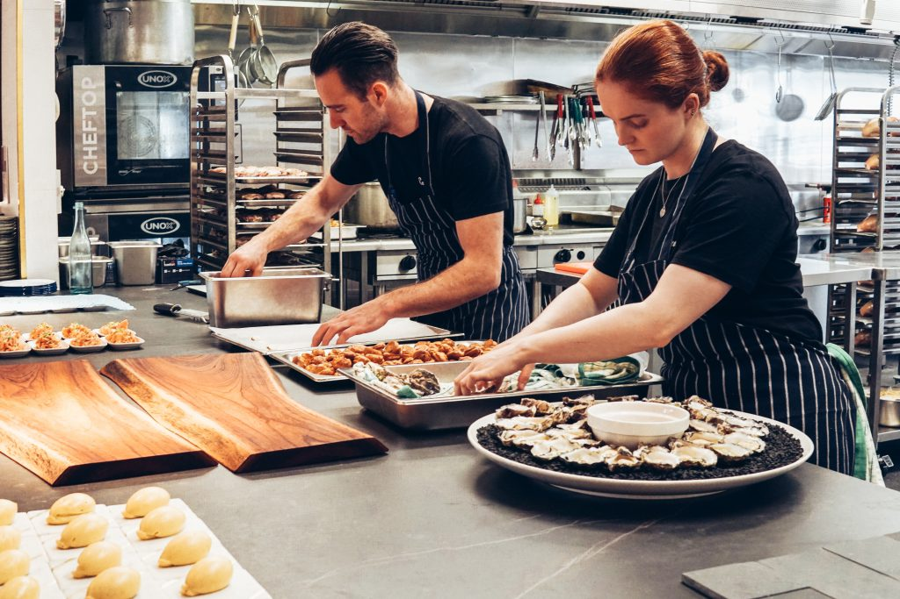

A propos
Le concept
Le Joy est né en septembre 2022 en pleine crise de Covid-19. Notre ambition est de prendre part à la restauration de demain en proposant une cuisine responsable, soucieuse et accessible à tous. Chez Joy, nous croyons en l'authenticité et au plaisir de consommer des produits locaux. Nous sommes dynamiques, inclusifs et pédagogiques dans notre discours et nous souhaitons établir une relation de proximité avec nos clients tout en respectant nos fournisseurs locaux.
Nous sommes également passionnés par la culture et organisons des événements pour la rendre accessible au plus grand nombre. Rejoignez nous chez Joy pour découvrir une cuisine responsable et délicieuse.
Le JOY et l'écologie
Chez Joy, nous sommes fiers d'être des défenseurs de l'environnement. Nous nous approvisionnons en produits locaux et de saison autant que possible, ce qui permet de réduire notre empreinte carbone.
Nous travaillons avec des fournisseurs locaux qui partagent notre engagement envers le commerce éco-conscient et la durabilité. De plus, nous faisons également attention au gaspillage alimentaire en recyclant et en compostant les déchets alimentaires.
Le JOY et la culture
Nous voulons également rendre la culture accessible à tous, c'est pourquoi nous organisons régulièrement des événements gratuits ou à prix réduit pour permettre à chacun de découvrir la culture sous toutes ses formes.
Nous sommes également passionnés par la culture et organisons des événements pour la rendre accessible au plus grand nombre. Rejoignez nous chez Joy pour découvrir une cuisine responsable et délicieuse.
Nos partenaires

Lucie DESCHAMPS
Artiste céramiste
Lucie Deschamps est une artiste céramiste talentueuse qui fournit à Joy des pièces uniques pour notre décoration intérieure. Nous aimons travailler avec Lucie car elle partage notre passion pour l'authenticité et la qualité. Ses œuvres en céramique ajoutent une touche de raffinement à notre ambiance chaleureuse et accueillante. Nous sommes fiers de soutenir les artistes locaux comme Lucie car nous croyons que la culture est un élément essentiel de notre communauté.
Nicolas ROUSSEAU
Viticulteur
Nicolas Rousseau est un viticulteur passionné qui fournit à Joy des vins exceptionnels provenant de petits producteurs locaux. Nous avons choisi de travailler avec Nicolas car il partage notre engagement envers la qualité et l'authenticité. Ses vins sont produits de manière artisanale, avec une attention particulière accordée aux détails, ce qui se reflète dans leur goût exceptionnel. Nous sommes fiers de travailler avec Nicolas car il nous fournit des vins qui se marient parfaitement avec notre cuisine potagère française et notre carte flexivore.

Martin DUPONT
Artisan boucher
Martin Dupont est un artisan boucher passionné qui fournit à Joy des viandes de qualité exceptionnelle provenant de producteurs locaux. Nous avons choisi de travailler avec Martin car il partage notre engagement envers le commerce éco-conscient et la durabilité. Martin s'approvisionne auprès de producteurs locaux qui respectent les normes en matière de bien-être animal, ce qui se reflète dans la qualité exceptionnelle de sa viande. Nous sommes fiers de travailler avec Martin car il nous fournit des ingrédients de qualité supérieure qui sont essentiels à la réussite de notre carte flexivore.
Caroline DUBOIS
Agricultrice bio
Caroline Dubois est une agricultrice bio passionnée qui fournit des légumes de saison et de qualité supérieure à Joy. Nous sommes fiers de travailler avec Caroline car elle partage notre engagement envers une agriculture responsable et durable. Ses légumes sont cultivés sans produits chimiques, ce qui permet de préserver la biodiversité et de réduire l'impact environnemental. Caroline est une partenaire essentielle de Joy car elle nous fournit des ingrédients frais et locaux qui sont la base de notre cuisine potagère française.